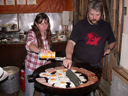

Standort des Lagers ist das Vereinsheim des Höhlenvereins Blaubeuren. Es stehen dort ein Aufenthaltsraum, sowie sanitäre Anlagen und ein gemütlicher Platz für Lagerfeuerabende zur Verfügung. Gezeltet wird am Waldrand um das Vereinsheim herum. Auch für Wohnmobile ist Platz vorhanden. Strom steht nur zeitweise zur Verfügung.
Auch im Sommer kann es auf der Schwäbischen Alb Nachts und bei schlechtem Wetter sehr kühl werden. Wir empfehlen deshalb dringend ausreichend warme Kleidung mitzubringen!
|
| Bild: Materialkunde, Einführung in die Höhlenausrüstung. |
Overall (Blaumann, Schlaz), warme Unterkleidung zum Beispiel Unterschlaz, warmer Trainingsanzug oder ähnliches, Gummistiefel mit gutem Profil, Helm mit elektrischer Helmlampe, Ersatzlampe, Ladegerät für Akkus.
| für Jugendliche bis 25 Jahre | 260.- € | (Förderung durch die EU) |
| ab 26 Jahre | 350.- € |
|  |
| Bild: Verpflegung. |
Für die gesamten 16 Lagertage: Unterkunft (Aufenthaltsraum, Wiese zum Zelten, sanitäre Anlagen), Verpflegung (3 Mahlzeiten pro Tag), Betreuung und Ausbildung in kleinen Gruppen durch erfahrene Höhlenforscher, Exkursionen und Eintrittsgelder bei gemeinsamen Veranstaltungen, eine CD mit den Schulungsinhalten und Bildern, eine Haftpflicht-, Kranken- und Unfallversicherung für Jugendliche bis 25 Jahre (Jugendgruppenversicherung) für die gesamte Lagerzeit. Für deutsche Teilnehmer empfehlen wir zwecks einfacherer Abwicklung die Versicherungskarte der Krankenkasse, für Teilnehmer aus dem Ausland einen internationalen Krankenschein, mitzubringen.
Teilnehmern ab 26 Jahren wird empfohlen selbst eine Haftpflicht-, Krankenversicherung und Unfallversicherung mit Bergekosten (wie sie zum Beispiel DAV Mitglieder haben) abzuschließen.
Die Anzahlung beträgt 50.-€ und ist sofort nach Erhalt der Anmeldebestätigung zu überweisen.
Der Restbetrag ist bis zum 30.6.2016 fällig.
Bitte fülle die Anmeldung gut leserlich aus (möglichst mit Maschine) damit nachher die Teilnehmerliste, die alle bekommen, stimmt. Die Anmeldung kann auch direkt im Rechner ausgefüllt werden, dann aber bitte ausdrucken und mit Unterschrift versehen an die Lagerleitung schicken.
Anmeldung per Brief (wegen der Unterschriften) an die Lagerleitung:
Petra Boldt
Hauptstrasse 4
89601 Schelklingen
Germany
Tel: +49-7394-1566
E-mail:
Anmeldeschluss: 30.6.2016.
Da die Teilnehmerzahl begrenzt ist, wird baldige Anmeldung empfohlen! Den genauen Lageplan, Anfahrtsskizze und eine Liste, was Du alles mitbringen solltest, erhältst du mit der Anmeldebestätigung.
{kind=link}